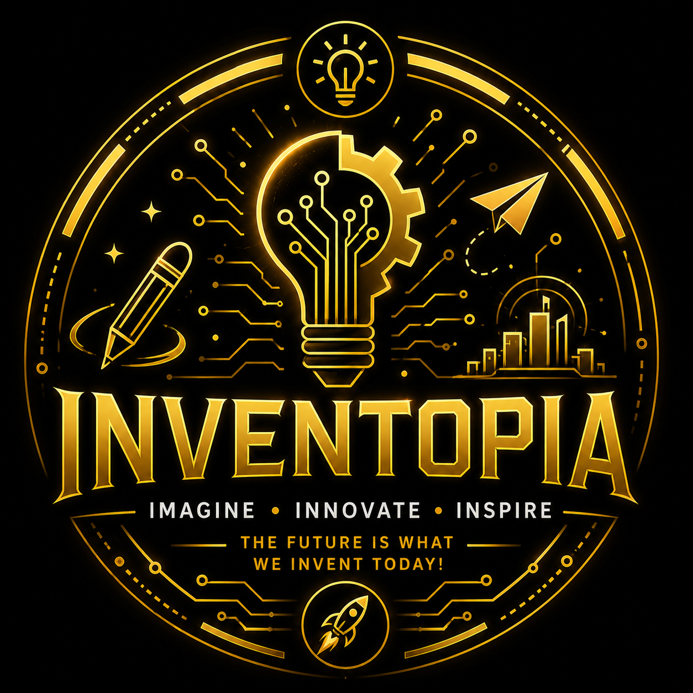

Events

Neuro Pitch
"Think Smart. Solve Real. Pitch Bold."
Grades: IX-XII | Team: 2 | Entries: Max 2
Mode: Offline | Device: BYOD for presentation
Step into the ultimate launchpad for the changemakers of tomorrow! The event challenges you to look closely at your surroundings—school, community, or environment—and identify the friction points that demand a solution.
Judging: Innovation, Feasibility, Impact, Presentation

ReelForge – Content Challenge
"Capture → Create → Amplify with AI"
Grades: 8-10 | Team: 2 | Entries: Max 2
Mode: Offline | Tools: CapCut, Canva, AI
This event is a creative fusion of on-spot photography, visual storytelling, and AI-assisted editing — reflecting modern digital expression: Capture → Create → Amplify with AI
Judging: Creativity, AI Usage, Storytelling, Editing

CodeSprint – Code Clash
"Debug. Solve. Conquer."
Grades: X to XII | Team: 2 | Entries: Max 2
Mode: Offline + Online | Language: Python
Step into a high-octane programming relay where individual logic transforms into collective triumph. Round 1: offline pen-and-paper debugging. Round 2: online hackathon on HackerRank using Python and essential libraries.
Judging: Logical Accuracy, Code Practices, Functionality, Efficiency, Team Coordination

NeuroNexus Arena
"Enter the Grid"
Grades: IX - XII | Team: 1 | Entries: Max 2
Mode: Offline | Venue: GLH
Beyond the Button-Mash. Welcome to the Tactical Matrix. Championing a progressive future for competitive gaming, this arena strongly drives diversity and inclusivity.
Note: Consoles provided on-site | Female participation strongly encouraged

WebXpress: AI Web Development Sprint
"Build with AI. Design the Future."
Grades: VII-IX | Team: 2 | Entries: Max 1
Mode: Offline | Duration: ~1 Hour
Artificial Intelligence has completely revolutionized web development—and we are stepping up to match the evolution. This event challenges you to blend your structural logic with cutting-edge AI tools to build a fully functional, responsive website using HTML, CSS, and JavaScript based on a theme announced on the spot.
Requirements: Chatbot, APIs, Visualization, Responsive Design

Inventopia – Tech Innovation Monologue
"Imagine the world of tomorrow and become the innovator who creates it!"
Grades: II-IV | Team: 1 | Entries: Max 2
Mode: Offline | Duration: 90 seconds
Participants will dress up as an original invention, technology, robot, gadget, or innovation designed to solve a real-world problem from the future. The costume and presentation should showcase creativity, innovation, and problem-solving.
Focus: Innovation, Imagination, Sustainability, Presentation

Digital Dharma – Command & Conscience Arena
"AI Skills + Ethical Thinking"
Grades: IX - X | Team: 1 | Entries: 1 Team
Mode: Offline
Welcome to Digital Dharma - Policing the Code. Humanizing the Machine! The ultimate AI ethics arena where technology meets conscience.
Focus: Critical Thinking, Ethics, Communication, Analysis

Synapse Street – Cyber Suraksha Natak
"Awareness through Drama"
Grades: V - XII | Team: upto 8 | Entries: 1 Team
Mode: Offline | Duration: 3-5 Minutes
Code on Screen. Conscience on Stage! Merging the raw emotional power of performing arts with the vital imperatives of digital safety.
Focus: Creativity, Relevance to Theme, Use of Props, Confidence

NeuroFlash – Rapid Tech Quiz
"Know or Never!"
Grades: VI - XII | Team: 2 | Entries: 1 Team
Mode: Offline | Rounds: 2
To match the "Synapse" theme, the IT Quiz begins with an exciting Preliminary Screening Round conducted at the host school. Top six teams qualify for the Grand Finale.
Rounds: Preliminary Screening (Pen-and-Paper) + Grand Finale (On-Stage Quiz)

RoboRealm – Circuit Showcase
"Build Smart. Move Fast. Think Ahead."
Grades: Open to All | Team: 2-4 | Entries: 1 Team
Mode: Offline | Platform: Arduino Robots
Blueprints to Battle. Where Metal Meets Mind! Teams will unleash their pre-built, self-constructed robots into a high-speed race, intricate obstacle courses, and head-to-head tactical challenges.
Requirement: Bring fully assembled, functional robot built before the event

The Random Access
"Data. Probability. Execution."
Grades: VII-XII | Team: 2 | Entries: 1 Team
Mode: Offline | Rounds: 3
A combination of puzzles, probability, quizzes, and multi-stage real-world challenges.
Focus: Logic, Teamwork, Strategy, Execution

SynapseX – AI-Powered STEM Challenge
"Innovate for Sustainability"
Grades: VII - X | Team: 2-4 | Entries: Max 2
Mode: Offline
Teams must design a STEM + AI-based solution to a real-world sustainability problem. Deliver a 3-minute pitch explaining the problem, solution, and real-world impact.
Focus: Innovation, Sustainability, AI Integration, Presentation

DataSynapse – The Insight Lab
"Uncover Patterns. Generate Insights."
Grades: IX to XII | Team: 1 | Entries: 1 Team
Mode: Offline | Duration: 60 Minutes
Unmask the Patterns. Predict the Future! Extract absolute clarity from chaos. Armed with a mystery dataset provided on the spot, you have exactly 60 minutes to scrub the noise, construct visually striking charts, map out critical patterns, and forecast future trends.
Tools: Excel / Google Sheets / Basic Python

MemeSynapse – AI Meme Challenge
"Humor meets AI"
Grades: 8-10 | Team: 1 | Entries: 1 Team
Mode: Online | Finals: Offline Showcase
Create AI-powered memes based on social and educational themes using creative tools.
Tools: Canva AI, DALL·E, ChatGPT